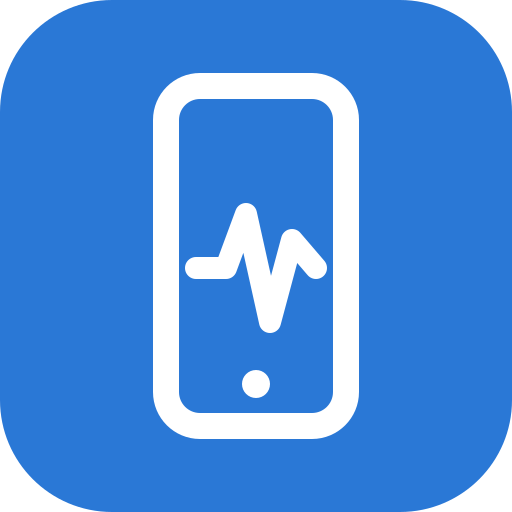

Entrar
Digite seu e-mail. Você vai receber um link de acesso, sem senha.
📩 Link enviado para .
Abra o e-mail neste mesmo aparelho e toque em “Sign in” (o e-mail chega em inglês). Confira a caixa de spam se não aparecer em 1 minuto.

Sensores do CelularDigite seu e-mail. Você vai receber um link de acesso, sem senha.
📩 Link enviado para .
Abra o e-mail neste mesmo aparelho e toque em “Sign in” (o e-mail chega em inglês). Confira a caixa de spam se não aparecer em 1 minuto.
Identificando…
Toque em Detectar sensores. Se aparecer um pedido de acesso a movimento e orientação, toque em Permitir.
Seu celular pode ter estes sensores, mas nenhum navegador dá acesso a eles. Só um app instalado pela loja conseguiria.
Escolha os sensores acima e inicie. A coleta só funciona com o app aberto e a tela ligada.